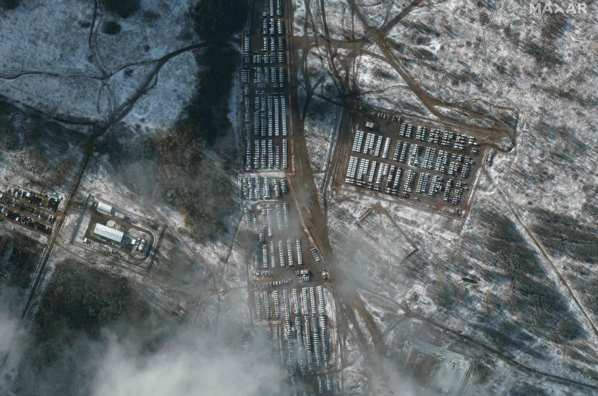

"Cовременная Украина целиком и полностью была создана Россией."

Так же:
Подготовка к вторжению
Признание ЛНР и ДНР
Признание ЛНР и ДНР
1. Первые «звоночки»
С начала осени 2021 года в СМИ (пример 1, 2, 3, 4, 5, 6) начали появляться различные статьи о том, что РФ готовит военное вторжение в Украину.
На приграничные участки с Украиной постоянно стягивались войска (источник 1, 2, 3) Российской Федерации. На фото спутниковый снимок российских войск в Смоленской области. 5 декабря 2021 года.

2. Заседание Совета безопасности
21 февраля 2022 года на внеочередном заседании Совета безопасности России под председательством Президента Российской Федерации Путина В.В. обсуждался вопрос о необходимости признания Донецкой и Луганской народных республик.
В ходе заседания все члены Совета безопасности Российской Федерации, единогласно, поддержали решение Президента РФ Путина В.В. о признании независимости ДНР и ЛНР. Более того, каждый участник Совета Безопасности привёл свои аргументы почему это нужно сделать.
3. Подготовка к войне. Признание ДНР и ЛНР
21 февраля 2022 года состоялось телевизионное обращение Президента Российской Федерации Путина В.В. к своим гражданам. В своём обращении Путин В.В. назвал украинское государство искусственным образованием коммунистической эпохи и заявил, что РФ признаёт провозглашённые в 2014-м в ходе вооружённого конфликта на востоке Украины ДНР и ЛНР.
Речь Владимира Путина продолжалась около часа. Согласно его словам:
При этом советская власть, формируя территорию Украинской ССР в составе СССР, присоединяла к ней русские земли и признала за союзными республиками права суверенных государств, что предопределило распад страны.
Далее Путин В.В. говорил о расширении НАТО на восток, которое, с его слов, направлено против России, а поэтому у России есть право «принимать ответные меры обеспечения собственной безопасности».
4. Договоры о дружбе, сотрудничестве и взаимной помощи России с ДНР и ЛНР
21 февраля 2022-го между Российской Федерацией и самопровозглашёнными Донецкой Народной Республикой и Луганской Народной Республикой были подписаны Договор о дружбе, сотрудничестве и взаимной помощи между Россией и Донецкой Народной Республикой и Договор о дружбе, сотрудничестве и взаимной помощи между Россией и Луганской Народной Республикой.
Согласно положениям договоров, стороны будут проводить консультации «в целях обеспечения совместной обороны, поддержания мира и взаимной безопасности». «В ходе этих консультаций будут определяться необходимость, виды и размеры помощи, которую одна договаривающаяся сторона окажет другой договаривающейся стороне в целях содействия устранению возникшей угрозы».
Данные соглашения использовались российскими властями, чтобы обосновать начало войны Российской Федерации против Украины, начавшейся 24 февраля 2022 года.
Однако, из публикации на «Официальном интернет-портале правовой информации» прямо следует, что договоры были ратифицированы 22 февраля 2022 года, а вступали в силу 25 февраля, когда война уже была в разгаре.
В настоящее времени соглашения утратили свою силу в связи с прекращением существования «независимых» ДНР и ЛНР.
В данном контексте нужно понимать, что согласно Декларации о принципах международного права, касающихся дружественных отношений и сотрудничества между государствами в соответствии с Уставом Организации Объединенных Наций от 24 октября 1970 года (Принцип суверенного равенства государств пункт d) никакие внутренние документы государств не могут быть обоснованием агрессии против других государств.
Данный процесс схож с событиями 1939 года, а именно «Секретный дополнительный протокол к Договору о ненападении между Германией и СССР», когда два государства делили между собой территории других стран.
5. Ожидания, заявления
После окончания Второй мировой войны и создания ООН количество войн заметно снизилось.
В своём эссе в 2021 году Путин В.В. отрицает существование украинского народа, а также говорит о том, что советская власть «склеила» УССР из разных частей, «ограбив Россию» по указу Ленина.
США и РФ проводили переговоры (источник 1, 2, 3) на уровне главных лиц государств (Джо Байден и Путин В.В.), в ходе которых США предупреждало Российскую Федерацию о том, что в случае начала военных действий на Российскую Федерацию будут наложены санкции. В ответ на это Российская Федерация требовала «нерасширения НАТО на восток, а также возврата военной инфраструктуры блока в Европе к состоянию 1997 года» (источник 1, 2).
Президент Франции проводил неоднократные разговоры с Президентом России по поводу недопущения начала войны (источник 1, 2, 3).
7 февраля 2022 года в ходе этого разговора Путин В.В. требовал, чтобы Североатлантический альянс обязался не принимать Украину.
22 февраля 2022 года в МИД Российской Федерации заявили, что Москва пока не планирует вводить войска в ЛНР и ДНР.
В статье Тимофея Сергейцева, опубликованной 3 апреля 2022 года российским государственным информационным агентством «РИА Новости», продвигаются идеи уничтожения Украины как государства, репрессий и этнических чисток в отношении украинского народа, а также геноцида.